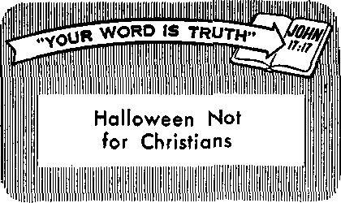

THE MISSION OF THIS JOURNAl
New* sources that are able to keep you awake to the vital issues of our times must be unfettered by censorship and selfish interests. "Awake!" has no ■fetters. It recognizes facts, faces facts, is free to publish facts. It is not bound by political ambitions or obligations; it is unhampered by advertisers whose toes must not be trodden on; it is unprejudiced by traditional creeds. This journal keeps itself free that it may speak freely to you. But it does not abuse its freedom. It maintains integrity to truth.
"Awake!” uses the regular news channels, but is not dependent on them. Its own correspondents are on all continents, in scores of nations. From the four corners of the earth their uncensored, on-the-scenes reports come to you through these columns. This journal’s viewpoint is not narrow, but is international. It is read in many nations, in many languages, by persons of oil ages. Through Its pages many fields of knowledge pass in review—government, commerce, religion, history, geography, science, social conditions, natural wonders—why, its coverage is as broad as the earth and as high as the heavens.
"Awake!” pledges itself to righteous principles, to exposing hidden foes and subtle dangers, to championing freedom for all, to comforting mourners and strengthening those disheartened by the failures of a delinquent world, reflecting sure hope for the establishment of a righteous New World.
Get acquainted with "Awake!” Keep awake by reading "Awake!"
Published Simultaneously in the United States by the watchtower bible and tract society of new York, inc. 117 Adams Street Brooklyn 1, N. U„ S. A<
and in England by
WATCH TOWER BIBLE Watch Tower House, The Ridgeway Nt H. Knorr, President
Printing this issue: 2,850,000
‘AwaJiB?' is h the teHvwlno 19 Jangiagu:
Semimonthly—Afrikaans Danish* Dutch. SitRlish, Finn-id). French, German, Greek, Italian, Japanese, Norwegian, Portuguese, Spanish, Swedish, Tagalog, Monthly—Cinyanja. Indonesian, Ukrainian, Zulu
Yearly sub^nripticrt rales
Offices lor semimonthly edlliona
America, U.S. 1W Adam* St., Brooklyn 1, N.Y *1 Autrilla, n Beresford Rd., Strathfield, N.S.W. S/-
Canida, Uo Bridgeland Ave , Toronto J 3, Ont, 11 England, AVafch Tower House,
The Ridgeway, London N.W. 7 7/-
New Zealand, 621 New North Rd., Auckland. 8.W 1 7/-Suuth Africa, Private Bae. P.O. EJandsfontrin. Tvl, 7/-
Monthly editions -’mt. half the above fuIcb.
AND TRACT SOCIETY
Loudon N.W. 7, England Grant Suiter, Secretary
4d a copy
Remittances for subscripiiori'i should be tspinl tn the oflfce in Jour emmtry. Otherwise sent! your remittance to London. Notice at expiration i* sent at least two Bwies before subscription expiree.
CHANGES OF ADDRESS Piotld reach us thirty day* before your moving data. Give us yoir old and n«w address (If pOMlblo, your old Mdreu label). Watch Tower. Watch Tower Haase. The Ridgeway, London N.W* 7, England
Lnlcred as ttccmd-class matter at Brooklyn, Printed in England
Th* Bible translation i&ad iw “AwXo!” Is
the
AS AT AV Pa
|
When other translation* are |
cud the |
following symbols will |
aepeet |
|
— Ameriran Standard Version |
eH> - |
Catholic Done? vendnn | |
|
— An American Translation |
The Emphatic Diaglot.i, |
/Co | |
|
«. Authorized Version (1611) |
JP - |
Jewish Publication Sue. |
J?S |
|
— J, N. Darby's version |
Le - |
Isaac TX'eser'* veraion |
yp |
New World Translation of the Roly Scrlgtareu ...... behind tM citations:
— Jamre Moffatt's Teraion
— J. B. Rotherham’s version
- Revised Stani]|gd Version - Robert Young's version
|
The Qualities of Joyful Living |
3 |
Blood Transfusion Quotes |
20 |
|
Giving Under Compulsion |
5 |
Appeal for Freedom of Worship |
21 |
|
How Safe Is Your Home? |
9 |
‘‘Your Word Is Truth” | |
|
Pearl of the Indian Ocean |
13 |
Halloween Not for Christians |
27 |
|
Forest Fires—a Wilderness Menace |
17 |
Watching the World |
29 |
|
081059 |
THE acquiring of material things has little to do with joyful living. There are other things that are far more meaningful. Take, for an example, the mother whose child is seriously ill. The health and life of that child mean more to her than all the refrigerators, television sets and modem furnishings in the world. A man’s home may be his palace, but it must be at peace. His loving family means more to him than all the rockets, missiles and satellites in space.
Some persons have erroneously concluded that wealth would add to their quality of living. “If we were only rich, all our troubles would be over,” they say. This is not the case. Wealth could very easily complicate matters and make life immeasurably more miserable than ever before. There are more important things than wealth. A common saying is, “The best things in life are free.”
Joyful living is not a product of the production-line system. Rather, it is the fruitage of God’s spirit at work on the hearts and minds of men of good will. Living can be appreciated to its fullest extent only after one comes into a dedicated relationship with Jehovah, the happy God. Apart from his Creator, man’s life is shallow, empty, without meaning. Mankind’s highest happiness and greatest joy rest in acquiring accurate knowledge of his Creator and using this knowledge to the praise of his Creator God, Jehovah. It is this God that supplies the qualities for joyful living.
The apostle Paul writes: “The fruitage of the spirit is love, joy, peace, longsuffer-ing, kindness, goodness, faith, mildness, self-control.” To divorce these qualities from life or not to have or develop them is to cut oneself off from what makes life worth living. What is life without love, joy and peace? A man can live in a palace and still be miserable and he can live in a shanty and be completely happy. The difference lies with the exercise of these qualities. If love, joy, peace, along with the other qualities Paul mentioned, are present, then life can be beautiful. Possessing an abundance of material things has no bearing on the matter.—Gal. 5:22, 23.
When we come to realize that we are the children of a loving God, we come under obligation to emulate his tender qualities toward one another. Paul writes: “Clothe yourselves with the tender affections of compassion, kindness, lowliness of mind, mildness, and longsuffering. Continue putting up with one another and forgiving one another freely if anyone has a cause for complaint against another. Even as Jehovah freely forgave you, so do you also. But, besides all these things, clothe yourselves with love, for it is a perfect bond of union.” What a changed world this would be if people would follow this inspired advice! Doing business would be a pleasure. Traveling, shopping and our human relations would all take a change for the better. Christians are under command to put this advice into practice. Therefore, Christian living should be not only the highest of living but the most joyful there is on this earth.—Col. 3:12-14.
Besides the qualities of the spirit, there are other things that contribute toward joyful living. Becoming a participator in events helps to make life more meaningful. People who are participators go places and do things, and the Christian ministry provides plenty of right things for them to do. —1 Cor. 15:58.
It is not enough just to do things. To make what we do worth-while we should want to do it with all our might. This calls for the quality of enthusiasm. How can we put this quality into our lives? Respond readily. Do not hesitate to work, to play, to laugh, to enjoy the fun of living. Always look for the sunny side of the street of life and you will find it more joyful. Respond to life’s challenges with a spirit of appreciation. As David wrote: “In God I have put my trust; I shall not be afraid. What can flesh do to me?” Such trust and enthusiasm, spirit and appreciation face up to Goliath-like situations with success. —Ps. 56:4.
The art of living joyfully calls for the qualities of awareness and anticipation. “For everything there is an appointed time, even a time for every affair under the heavens.” (Ecel. 3:1) Persons with awareness appear to appreciate this fact more than others. They are abreast of things that are worth knowing, and they have time for things that are worth doing. They are busy, yes, but they are active in a happy way. They know how to get the most out of life with the minimum of effort.
Observant persons and persons with insight have a way of making life fuller, richer and happier for themselves and others. This combination of qualities makes a person wonderful company. They have their physical and spiritual eyes wide open. Being observant aids them in making wise choices and in evaluating properly. Jesus told Martha: “Martha, Martha, you are anxious and disturbed about many things. A few things, though, are needed, or just one. For her part, Mary chose the good portion, and it will not be taken away from her.” Martha apparently allowed material things to becloud her spiritual sight, while Mary kept this quality sharp, for which she received the Master’s ‘well done.’ Martha should have known: “It is the spirit that is life-giving; the flesh is of no use at all.” For life to be joyful, creatures must make room in their lives for. God’s spirit to do its part.—Luke 10:41, 42; John 6:63.
To be convinced of these spiritual truths and to put confidence in them are also factors that contribute toward joyful living. Confidence and conviction inspire one to hope in the living God to usher in a new world, to resurrect the dead and to bless faithful ones with everlasting life. So, happy are those who are conscious, not of their material but of their spiritual needs, for life to them will be joyful and most complete.—Matt. 5:3.
GIVING must be voluntary to be enjoyed. To compel one to give of his own is not only wrong, but unkind and unchristian. The impulse to give must flow freely from the heart, and when it does it has a pleasant rewarding effect on the giver, whereas giving under compulsion almost always has a revulsive effect. It usually fills the giver with bitterness and resentment.
It is not only important but necessary that we should give of ourselves and our possessions. The Dead Sea is dead because it does not give out. Men were created to give out. That is why it is impossible for us to hoard good within ourselves for very long without doing injury to ourselves. We must give for our own good. What good would the sun, moon and stars and nature be if they did not give forth? What good would we be if we refused to give of ourselves? We would be psychological wrecks if we were suddenly prevented from giving. In fact, it is impossible to imagine a world without people giving to one another.
However, it is one thing to give freely and another thing to be forced into giving. Said one woman, "I feel like a million dollars when I give from my heart.” No doubt, we have often felt the same way ourselves. But when compelled to give, an entirely different reaction is created, as is shown by the following remarks of an executive who was questioned about various drives and giving. “Too much pressure,
too many campaigns,” he said. "You are made to feel unpatriotic if you don't give. I appreciate their problem, but I get----
mad at them.” There is no joy in such giving.
Doubtless, many have been driven to anger by the number of collectors that have approached them for money. One businessman of a small shop said that as many as twelve have asked him for money in a single morning. If a customer is doing the soliciting, one is forced to give, because not to give may mean the loss of business. But to give a dollar every time someone pleads for help, it would not be long before you would be on relief yourself.
In the United States alone close to $5,000,000,000 a year is lifted from private pockets and purses into charities. During one Christina# season, Time magazine reported that there were some 2,tfi0,000 fund-raisers on the prowl. One charity group that collected $3,978,000 in five years stated that 84 percent of their collections went for “overhead.” Another group collected $21,480,000 for disabled American veterans. However, $17,000,000 of that amount went for salaries and promotion costs and almost $4,000,000 went for lobbying in Washington, and, according to Time, “not a cent went for the direct aid of a needy veteran.” Would giving to such causes make you happy? Hardly.
One large city in the United States found that more than half its charity groups were in the questionable category. Other investigations have discovered that a number of women who rattle charity boxes in busy city business districts set aside 25 to 30 percent of the collections for themselves, with the same amount going to the professional promoter for whom they work. Little wonder people feel that there are not only too many campaigns and too much pressure, but too many grafters and chiselers, too many full-time professional and amateur panhandlers in the moneyraising business.
Religion, “the mother of charities,” has also come under suspicion by many a donor. The New York Daily News reported that hundreds of small churches are organized, not to teach Christianity, but to fleece the public. These so-called churches expend their main efforts on collecting funds in the name of charity. This newspaper stated that more than $100,000,000 was being picked out of people’s pockets and poured down a rathole in the name of sweet charity by this method. Giving to such fake charities does not result in happiness but resentment.
Professional swindlers or collectors are cleverly adept at pressurizing and shaming the public into giving. The doorbell pusher, for example, is a skilled fasttalker. One householder, referring to this method, stated: “I don’t like it. It makes you feel forced into it, shamed into contributing. You feel like a heel if you refuse.” The fast-talker knows this and he presses his skill to the limit, extorting money from the public. Other collectors smooth of tongue will use the telephone to make contacts, then they follow up prospects. Others are clever writers. These use the mails to reach the heartstrings and open up the wallets and pocketbooks of the public.
Often money-raisers will send merchandise. They know that when people receive the unauthorized merchandise, varying from Christmas and TB seals to pens with one’s name engraved on them, they will feel obligated to give something. “I resent very much getting things through the mail,” said one woman, “I think I’m on every sucker list. And being on the third floor, I resent going downstairs and finding nothing but something from Father Flanagan’s Boys’ Town. I resent this particularly because they send year after year, whether you respond or not. ... I resent it when they keep on sending even when I write and tell them to take me off their list.” Here again, resentment and not happiness results from pressure.
Professional collectors know that by personalizing their approach they can reach into more pocketbooks. So instead of directing attention to an impersonal organization or agency, these shrewd fundraisers will say they are collecting funds for poor, destitute widows, helpless children or families who are desperately in need. These swindlers know,, too, that you will say “no” to most appeals. So they will cleverly arrange for a friend to do the collecting. When a friend says it is for a hospital, it becomes very hard not to give something.
With a view to stimulating giving or to shaming nongivers into giving, many welfare agencies, colleges and even churches will publish the names of contributors and the amounts that each gives. F. Emerson Andrews in his book Attitudes Toward Giving states: “The New Testament admonition to ‘take heed that ye do not your alms before men, to be seen of them; otherwise ye have no reward of your Father which is in heaven,* is an ethical concept more admired than followed, at least by agencies desiring to put maximum pressure on givers.”
In recent years the proportion of welfare contributions sought and obtained in factories and offices has been on the increase. Collectors talk up the “100 percent” type of drive. “You’re the only one not giving,” they say. “Come on. you want our office to be on the heel list?” “Don’t be a tight wad. What’s a fin ($5.00) anyway?” Sometimes there is absolute compulsion. Instead of asking how much one would like to give, many collectors demand a certain amount. One donor stated that he was violently opposed to such pressure tactics. “It is not a gift. It is a business requirement, holding him up at the point of a pistol,” he said.
Perhaps the most heartless way to collect money for charities is to prey on children. Solicitors say school children learn the needs of the community this way. Parents say it is simply an underhanded method of hounding them for more money. Collectors know that if parents do not give, the child will be made to feel bad and embarrassed. It is rotten high-pressure salesmanship. Andrews tells of a mother who had a ten-year-old son that gave his lunch money. The mother said: “I discovered that after a while, and went to one of the nuns to protest. . . . The nun said she did not like these fund-raising campaigns; the children should be let alone, she thought. But the head of the school is of another opinion.”
Children of another school became nervous and depressed. When the parents checked with the teacher, they found their answer in a hurry. “Those poor youngsters,” the teacher said, “have been flooded and nearly drowned with vicious, whipcracking, carefully contrived campaigns for money for ‘health campaigns.’ They have been told and told and told that polio is hovering over their shoulders, and ‘Bring money to fight it;’ that heart disease kills children as well as adults, and ‘Bring money to fight it;’ that tuberculosis is everywhere, and ‘Buy stamps to fight it.’ Is it any wonder,” the teacher asked, “that sensitive, growing children are being frightened to death?” Despite the legitimacy and laudability of some campaigns, one can feel only deep revulsion for schemes that prey on minds of school children. It is a crime what men will do for a few extra dimes and dollars.
Today about half of all individual giving goes to churches of various denominations. They have a large variety of philanthropies, including complete school systems, hospitals and a wide range of social services. One great-grandmother spoke her mind when she said: “Nobody wants more money than the churches, and they don’t do too much good! Beg, beg, beg, beg, and you hardly see the preacher until you go over there.”
From ancient times religious people have been induced to give by listening to vain promises made by preachers. It was believed and taught that almsgiving would free one from death. Cyprian asserted that almsgiving could bring renewed cleansing to souls that had lost their baptismal purity. Augustine taught that almsgiving obtained forgiveness for light offenses, that it atoned for sins of the departed as well as for those of the living. To this day Roman Catholic prelates encourage giving as a means of atonement for sins; “If there is anything in your past life you would like to atone for, the best way to do it is to make a sacrifice . . . pin your sacrifice to this column and send it to the Most Reverend Fulton J. Sheen, ... or to your Diocesan Director.” Are such valid inducements toward making contributions? Scripturally no, for not with silver and gold, but with Christ’s precious blood are our sins wiped out. Not with works of self-righteousness, but through faith do we gain forgiveness.—1 Pet. 1:18, 19.
Recently the foremost United States Roman Catholic weekly, Our Sunday Visitor, devoted practically an entire issue to stressing the giving of money on the part of Catholics, shaming them by implying unfavorable comparisons with Protestants, such as: “We Can Learn from Others"; and, “Here’s the Zeal We Ought to Have.” Is this the Christian way of encouraging contribution^ for worthy causes? The motive for Christian giving is love, not shame or compulsion.
The tithing law of Moses is not now obligatory, for Christians were made free from the law. Still there is an increasing number of Catholic and Protestant organizations that are stressing the giving of the tithe. But even such tithing has in it a sense of compulsion, or at least a duty. While to some people there is satisfaction in doing their duty, yet many do not get great joy out of it. As a matter of fact, King David looked upon giving not so much as a duty but as a privilege when he said: “Who am I and who are my people, that we should retain power to make voluntary offerings like this? For everything is from you and out of your own hand we have given to you.”—1 Chron. 29:14; Rom. 10:4.
Christian giving must be voluntary to be acceptable to God. Christians do not need every device known to modern psychology applied to them to get them to part with their money. They do not need clever fund-raising sermons directed at them; neither need they be forced to make pledges, play lotteries and bingo games before letting loose of their money. And certainly they do not need that everpresent collection plate or basket before them to move them to give. None of these methods find support in the Scriptures.
The Scriptural method is simply to make known the fact that there is an opportunity or privilege open to give of one’s substance and then use the amount contributed for the intended purpose, not for personal gain. That is the way Moses did it when it came time for building the tabernacle and furnishing it. There was such ready response that soon the Israelites were told to stop bringing contributions, for they had more than enough.—Ek. 36:3-7.
Christians follow the same principle of giving voluntarily. They know that “the generous soul will itself be made fat, and the one freely watering others will himself also be freely watered.” They appreciate that each one is to “do just as he has resolved in his heart, not grudgingly or under compulsion, for God loves a cheerful giver.” With them there is “a readiness to want to do,” which is rewarding in God’s sight—Prov. 11:25; 2 Cor. 9:6, 7; 8:11,12.
For such generous giving all that is necessary is to give Christian people a gentle reminder that there is need and that giving is a privilege. Criticism or compulsion is not God’s way to move hearts. Christians should never find occasion to say, “You must give.” The word “must” should never be used in connection with giving. The givihg must be free, voluntary, willing. And when it is, it brings us deep satisfaction and joy. As Jesus himself said, "There is more happiness in giving than there is in receiving.” Giving is a privilege and a blessing. It should not be forced. —Acts 20:35.
YOU might as well face it, your home is not as safe as you might think it to be. A man is almost as safe on the highway during the rush hour as he is in his proverbial castle. Every eight seconds somewhere in the
United States a serious accident takes place in the home. Every year about 34,000 lives are lost, and in some years accidents in the home far outnumbered highway accidents. In many cities home accidents of all kinds outrank every other form of fatal mishap. Annually approximately 5,250,000 nonfatal accidents occur in the home. About 140,000 of these suffer permanent impairment. Not all of them, however, are seriously handicapped. In 1954 accidents cost the United States in the vicinity of $9,800,000,-000, almost twice the amount the nation spends on its education.
What can be done to minimize the hazards in the home? What can be done to keep people from crippling and killing themselves accidentally?
It is amazing how many people hurt themselves falling in the home. A vast majority of these are older people. Persons over sixty-five suffer more than twice as many fatal accidents as occur in all the other age groups put together. If you are between fifty-five and sixty-five, watch your step. Older bones break easily and they take longer to mend, which means that fatal complications may set in.
Statistics show that nearly 18,000 yearly are killed by fails in the house, which accounts for about 50 percent of home accidents. Thai is nearly three times the nuMiber killed in the lext most important type of accident. Burns and fires are responsible for about 30 percent of the fatal accidents in the home. Various other causes make up the remaining 20 percent.
Many deaths were the result of slipping on highly polished floors. The telephone rang. A young mother dashed across the kitchen floor to reach the phone. She took a bad spill that hospitalized her for weeks.
To avoid serious spills polish your floors with nonskid waxes. There are nonskid paints and nonskid tile that can be used in kitchen, bathroom and basement floors. Even with nonskid preparations, caution is necessary. Also, make sure your carpeting has a rubber back or is otherwise securely installed. A slip on a carpet can be just as painful as on anything else.
Old chairs are very unreliable if -the legs are wobbly or the backs are weak. Climbing on chairs to reach cabinets, hang curtains, or to dust is a sure invitation to a serious fall. Never be foolish enough to stand on a rocking chair. Have a small stepladder nearby to use in hanging curtains and pictures, and for dusting and cleaning. Going up and down stairways has led to serious accidents. About ten times as many people fall going downstairs as climbing up. Reports show that many more women than men fall downstairs. It may be that women, being at home more than men, use the stairs more often. High heels may make you look inches taller and slimmer, but on the stairway they are a hazard. One misjudgment and they can send you plunging headfirst to your death. Also, watch out for old shoes, roller skates and other things that might be in the way. An untied shoelace can also be a menace. Inspect the stairs regularly. Be careful when you walk up and down them, and be especially careful if you have a knife in your hand or are carrying glassware.
According to the United States Safety Council, bifocal glasses can be a major cause of falls. Sometimes those using bifocal glasses look down at the stairway and see part of the step through the lower lens and part through the upper lens. They get confused, miss the step, and fall. Always hang on to railings. Of all the fatal accidents that happen every minute of the day in the United States, studies indicate that at least one fifth of them are due to poor eyesight. Those of you who wear glasses have reason for extra precaution.
You may find it hard to believe, but the most dangerous place in your home, according to accident statistics, is not the stairway, or the kitchen, or the bathroom. It is the bedroom. Of some thousand fatal accidents in the home, 25 percent of the total number occur in the bedroom. Some people have the habit of leaping out of bed; they get dizzy and tumble. Or they get up in the middle of the night to go to the bathroom and stumble over shoes, rugs, chairs and lamp cords. Take your time getting out of bed. Give your body a chance to adjust itself. It is a good thing to have a flashlight near the bed for night use.
The kitchen ranks next as the most dangerous spot in the house. Here is where power, heat and various sharp tools are in almost constant use. Women between the ages of thirty-five and sixty-four suffer most from kitchen injuries. In the kitchen are boiling pots, flaming gas burners, humming electric motors, deadly poisons and powerful bleaches. Of the 17,000 and more people that die yearly as a result of falls, 850 have met death as a result of slipping on slick kitchen floors. Knives and old tools are the cause of 14 percent of the casualties in the homes. Do not play with knives. Also, have a special drawer and rack in which to put them. Tin cans, broken glass and razor blades should never be thrown in wastebaskets where children can get at them. Keep poisons such as ammonia and powerful bleaches and certain corrosive preparations for a clogged sink out of a child’s reach. Under the kitchen sink is no safe place for them. Stock them high overhead in the pantry.
How dangerous is the bathroom? The bathroom in itself is not dangerous. Accidentwise, it is relatively safe. Accidents that take place in the bathroom are just a little more dramatic. People drown, get scalded, electrocuted or poisoned in the bathroom. And it is these dramatic accidents that make the newspaper headlines. There are a few things to beware of in the bathroom, however. Beware of anything operated electrically. One study showed that of two hundred deaths at home, twenty-five were caused by electric shock. Never touch anything electric unless you are dry, and that goes for hair curlers, hair driers, electric razors, telephones, radios, massage vibrators, etc. Even to turn on an electric lamp with one hand while the other is on a water faucet may, under certain conditions, result in death from electric shock. A person immersed in water or standing on a wet floor while handling electrical equipment is courting death, and a quick one. Perhaps the best advice is to keep electrical equipment out of the bathroom. It takes only one mistake to bring about certain death. It is well to have a sturdy grab-bar installed next to the bathtub, so that you can grip it as you lower yourself into the tub and as you crawl out. A nonskid bathmat in front of the tub will help prevent slipping. Do not wait until you have an accident before you take these precautions. Make the proper adjustments now before it is too late.
Electricity is always unpredictable. Exposed electrical wires are fire hazards. In United States homes about forty fires occur every day in the week because of electric irons left in the circuit. Such fires have cost taxpayers about $1,625,000 yearly. Sister is ironing the week’s laundry. The phone in the next room rings. She hurries to answer the telephone without disconnecting the appliance. When she returns the room is on fire. This happens over and over again. Disconnect all elecr trical appliances when not in use. Also, never run electrical cords under rugs, and do not place cords in door jams. Wear and squeezing may break the covering and expose the wires. If that happens, there is sure to be a fire.
Poisons rank high on the accidentaldeath list. In a year over a thousand children are poisoned fatally at home. It is usually a case where adults or children pick the wrong thing. It is amazing how many people will drink out of a bottle without examining closely to see what is in it, so to keep people from killing or poisoning themselves, keep poisons under lock and key. In addition, label every bottle containing poison in big red letters “POISON." Then perhaps tie a little bell around the neck of each bottle containing poison so at night the tinkle will be a warning to you. Do not wait until you poison yourself before taking these precautions. Do it now.
Every twenty-four hours there are about sixteen deaths from fires in United States homes. Every day some nine hundred homes catch fire. That is a deplorable record for a safety-conscious nation. In 1955, 5,400 persons died from fires and burns at home. One out of three deaths due to burns was a child under five years of age. What are the causes? A good many of these fires started when the mother went out for a few minutes to visit with the neighbor or do some shopping. If you love your children, never leave them alone in the home, not even for a few minutes. If you do, the unexpected will happen.
Fires usually call to mind matches, burners and furnaces. The more than 850,000,000 matches that are used daily in the United States, which represents an average of 600,000 matches struck every minute, betoken a tremendous danger that exists constantly. The match in itself is not a fire hazard, that is, if shielded and put out carefully. But if treated lightly, each match becomes a potential danger to the home. Never keep matches where children can get at them. Keep matches in a metal container far from the stove. Make sure the match is cold when you throw it away.
Escaping gas comes third on the list of causes of accidental deaths in the home. Never go to sleep in a room with doors and windows closed where a gas heater is burning. The fire can go out for lack of oxygen and the- escaping gas can kill you. There is no record of fresh air killing anyone, so keep the windows high.
Cleaning clothes with gasoline is extremely dangerous. About three hundred women a year lose their lives this way. A woman set about to clean the spot on her dress. The fumes from the cleaning fluid reached the pilot light on the stove a few feet away and ignited. That cleaning cost lives. Never be too sure with gasoline. A burning cigarette or the fire in the furnace in the basement can touch off a gasoline explosion. If you must clean at home, make sure you use only nonflammable and nonexplosive fluid.
Attics and basements are places where parents like to stack their junk. The attic is piled high with old pictures, newspapers and clothing. The basement is stacked with cans of paint, bottles of turpentine, cans of kerosene and gasoline, oil-soaked rags and empty burlap bags. This combination makes the neatest bomb you ever saw. All it needs is a spark to blow the house sky-high. Many fires start from spontaneous combustion in oily rags. If you must store these things, keep them in a fireproof place far away from the house. As for the attic, toss away the needless trash and free the house from this fire hazard.
Farm life used to be referred to as some sort of sanctuary from the hazards of city living. Now even this has changed. There are more casualties annually on farms than in any other occupation. About 14,000 deaths and 1,200,000 injuries take place yearly. Mechanization has arrived on the farm and so have its fruits. Tractors, mowers and combines are reaping their toll in accidents. Farmers have become heavy smokers and many of them are careless as to where they toss their matches and cigarettes. In the United States and Canada about two hundred farm buildings burn every day in the year. Farm fires, according to the United States Department of Agriculture, kill from 2,000 to 3,500 persons each year and cost the country $100,000,000. About 40 percent of farm fires occur in dwellings, which means that $40,000,000 worth of farm homes go up in smoke every year.
The number of children hurt on farms is increasing sharply. Farmers must train their children to stay off tractors, hay wagons, mowers, grain binders, and so forth. More than 90 percent of the accidents with farm children result from inattention and carelessness on the part of adults. Learn to put away your yard and garden tools. A scythe hanging on the branch of a tree is a menace. Someone may walk into it.
Both farmers and city folk must look after their little ones to keep them from suffocating or accidentally strangling themselves in their cribs or in-a bed. Beware of using heavy bedclothes in the crib or carriage; the child can smother under them. There is always a danger when placing an infant in bed with an adult or older children that during the night these may roll over on him. Even nursing mothers can smother their infants brought into bed for feeding. The mother drops off to sleep and rolls over on the child. In the United States this happens on an average of 150 to 200 times a year. Feed your baby sitting up. And, if at all possible, have him sleep alone.
Traditionally, man’s home was his castle, a tower of security. There is no reason why it cannot continue to be just that if he combines a little more carefulness with reasonableness. Eliminate all the man-made contraptions at once. Safety does not depend on the place but on the person. Instill in yourself this sense of safety or caution and you will insure for yourself a happier life in this age of accidents.
<[ “The drop in the ability to learn is so gradual that at eighty we still have the learning ability we had at the age of twelve.”—The Retirement Handbook, by Joseph C. Buckley.
ONE were privileged to choose his - birth* z place, doubtless, the beautiful island of Mauritius would be considered just about perfect- From the coral reef that surrounds it to the top of the highest mountain, Mauritius brings only praise to its Creator. The island is truly a pearl, small in size but precious to its inhabitants. It rises quickly from the sea to its highest points. To call the mountaintops “points” is no exaggeration. Many of these mountains rise like fingers from a hand. In fact, one is called Le Police (Thumb) for this reason. This island pearl of the Indian Ocean was formed by volcanic action, which accounts for the unusual shape of the mountains and the numerous splits in the earth, into which fall the beautiful sparkling waterfalls or cascades. For the most part the island’s lower grounds are covered with sugar cane, while bananas and tea are grown higher up the mountains. Trees make Mauritius colorful and variety is everywhere, from the tall bamboo grass to the flaming flamboyants with their huge scarlet flowers. However, the island lies in the cyclone area east of Madagascar in the Indian Ocean, and because of the cyclones it is rare to see a really big tree. Fortunately though, Mauritius is more likely to be just missed than hit by a cyclone. The last one to strike the island was in 1945.
The first view a visitor has of this enchanting island is as the ship steams toward Port Louis harbor. The harbor lies low in the foreground against a backdrop of mountains, not high mountains but impressive because of their ruggedness and
because of the fluffy clouds that gather around their jagged summits. Once ashore, however, one is attracted by the sights near at hand. A newcomer has to steer his way carefully through the narrow streets. People hurry along sidewalks that in locations are not very evenly paved.
It is not difficult to get a taxi from Port Louis, the capital city, to wherever one desires to go. In fact, it is difficult to avoid taking one. Many smiling taxi drivers stand ready with their latest-model cars, doors opened wide, hoping to lure passengers in. However, a bus ride gives one more of an opportunity to see Port Louis, the only big town in Mauritius. It is not long after you arrive that you are fully convinced that the radio is quite popular with the Mauritians. From one house come the strains of Indian music mixed with the voices of a Chinese singer, while from the Coca-Cola Palace across the road a radio is blaring out with a forceful base of rock ’n roll.
Living in a land of sunshine does have its effect on the surroundings. The sea and sky seem bluer, the clouds appear fluffier and whiter, and the fields seem to have a deeper restful green about them. This love of color is reflected by the people, who use it to the best advantage. The younger generation love bright reds, blues and colors of a striking nature. The Indian women know how to blend colors in the saris of pastel and softer hues. With their sleek black hair drawn into a chignon at the nape of the neck and cleverly decorated with flowers, these dark-eyed beauties make a striking contrast alongside western women with their peaches-and-cream complexion.
Just as the Mauritians love color in their dress they also love it in their homes, which are by no means dull. In most homes one will find bright paintings decorating the walls, and often these are done by the people themselves, who have an unusual flair for artistic painting. Even where something handpainted or a properly framed picture cannot be obtained, what they do is remove a bright magazine cover and hang it. These pictures can be very interesting to the visitor and quite distracting at times.
The rich of Mauritius live in the cooler areas. Many of them live in beautiful homes surrounded by lovely gardens, with a variety of palm trees and tropical flowers. Such natural beauty is cause for much praise to Jehovah, the grand Creator of it all.
Many Indian families live in small huts without the modern facilities of the larger homes that the rich have. But what these small huts lack in facilities appears to be more than compensated for in atmosphere and joys of family life. After a hard day’s work in the sugar-cane fields, the small huts, with a dinner of rice and curry and the sight of romping children, are just as much a place of rest, relaxation and enjoyment as are the larger mansions. The poorer womenfolk do not have electric washers, but the way they all gather on the banks of the river to beat out their family wash on the rocks and lay it in the sun to dry while enjoying a friendly chat with their neighbors seems to more than compensate for not having the convenience of an electric laundry.
Education has recently become a main feature in the lives of most young Mauritians, and they learn quickly. However, along with this feverish clamor for education there still exist deep-rooted superstitions. Often the sorcerer will be called in to paralyze a neighbor who has committed some sort of unlawful act. One gentleman of the “Christian” faith had an argument with his non-Christian neighbors, whereupon the neighbor immediately sent for his priest, who performed some sort of ceremony around a tree in the garden, with the result that the baby of the “Christian” family ipimediately took ill with a mysterious disease. Naturally, the family became very alarmed about it. They were told that a firm knowledge of God’s Word can be a defense against this sort of thing.
Very often visitors are startled at what they see take place in the streets of Mauritius. During certain feast days young boys are seen walking barefooted on fire. Other boys take on the appearance of human pincushions with slim skewers imbedded in their chest, arms and cheeks. Some of these pins are stuck in one cheek, cross through the mouth and come out of the other cheek.
As elsewhere throughout the world, the teen-agers here too have their problems. Studying and examinations are important to them if they hope to get good employment. Of course, they have their pleasures too. There are cinemas showing Indian or French films, and volley ball and football seem to be popular. And we must not forget the horse racing, which attracts many of the islanders to Champs de Mars at Port Louis on Saturday afternoons throughout the season.
To get a good look at this jewel in an ocean of blue, it is possible to follow a path and climb to the top of Be Pouce. The hike takes about an hour and it is worth every bit of the effort put forth. From the top it is possible to see what a tiny pearl Mauritius is. With a single sweep, the eye can see the island’s forty-mile length and its width of twenty-seven miles. Perched away up here one can see this patch of green in the middle of an ocean fringed with white lacy foam as the waves break on the coral reef before flowing gently in to the sandy shore. To descend from these lofty heights is as if one were to travel from the top of the world to the seashore in a few breath-taking moments.
Adjusting to the fact that this is still planet earth comes quickly when one sees Indian women dressed in their colorful saris and bright jewelry, with rings on their toes. Along the seashores can be seen teen-agers, the boys dressed in clean bright shirts and shorts, the girls with long black hair in beautiful cotton skirts and dresses. Most of the shops and restaurants are owned by a Chinese proprietor with many smiling sons always eager to bargain with their customers. Under the late afternoon sky, what can be better than a delicious plate of Chinese food by the seashore?
When visiting the homes of the people one has opportunity to get acquainted with a number of different races. It is not unusual to find Indian, Chinese, Creole, English, French and Franco-Mauritian all living within a short distance of each other. Naturally this results in a great diversity of religions. The Indians are mainly divided into the Tamil and Hindu faiths. Among the Chinese, the older generation, and especially the women, are Buddhist, but a large proportion now profess to be Catholic. One also finds the Islamic community well represented. It is the Creoles, a people of mixed racial origin, Malgache, Indian and European, who claim to be the real owners of the island and they will be quick to tell you so, though the IndoMauritians outnumber them two to one. Their religion, for the main part, is Catholic, but the Protestants h$ve made many converts, especially the Church of England and the Adventists. The Moslem men are identified by their little fez caps and the Hindus by their toques (head scarfs) and langoutis (loincloth trousers). These men carry a big black umbrella in preparation for the heavy rainfalls.
The work of a missionary is made easy here because of the friendly attitude of the people and the warm welcome given him when he calls at the homes. The majority of people will ask him in and give him a seat while he presents his sermon. And if the person is interested, it is quite likely that he will offer his visitor a soft drink to refresh himself before he leaves. Also, he may be offered fruit or vegetables, and in some cases this is accepted as a contribution for the literature that is left.
When a missionary calls at the homes, it is not unusual for him to think he is entering the yard of a better-class home, only to find that it is a Buddhist temple. At first it is difficult to distinguish these buildings from ordinary homes. But on getting more acquainted with the Chinese, one can recognize the broad strips of red paper lettered with gold on either side of the gateway. This marks it as being a Chinese temple. Inside one is welcomed by a broad smile from the priestess. We are told that in this particular temple there are only young girls who have dedicated their lives to this work. They perform all the ceremonies, which sometimes last for five or six hours, during which time they claim to call back the spirits and invite them to a feast. The spirits are called by means of the rhythmical beating of the drums by the priestess, and they are sent away again by the shooting of firecrackers. Part of the ceremony consists of a giant bonfire of paper imitations of everyday items, such as dresses, shoes, household articles and perhaps even an airplane. This assures the person who is burning them that he will have plenty of this world’s goods in the next life. It is mostly the older generation who attend these ceremonies and still take an active part in their religion. The younger generation seem to
ASK FOR THE NEXT ISSUE
• Are you looking for a Job? Do you know how to find employment of the kind you want? Be sure to read the article '‘How to Get the Job You Want” In the next issue.
* Why has communism met with success In lands that profess to be Christian? What moves church members to ignore the pleas of their clergy and vote for Communist candidates? Read the facts in the article “Where Communism Thrives?’
.......----------------------------------------J
be more interested in studying and getting degrees arid also searching for something that will give them a better hope.
In general, Bible knowledge is very lacking. The majority of people do not possess a Bible and many have never seen one. A fervent Catholic will state that he has never read the Bible with about as much pride as a Westerner may say that he has read it three or four times. In the poorer sections the Catholics insist that it is forbidden for them to read the Bible, but the educated ones are just as adamant in stating this is not so and that anyone can read it. However, both sections openly put tradition before the Word of God.
On the island there are two congregations of Jehovah’s witnesses. One is at Port Louis and the other at Beau Bassin, where the meetings are held in the missionary home. The journey between these two points takes about twenty minutes. The seven-mile trip is fascinating in that bus drivers race each other for passengers. All bus transportation stops at 9 p.m. Those who attend Bible studies after this time may find the trip home difficult. The enterprising taxi driver with his "train car” is the one who comes to the rescue. He operates only with a full load and the fare is thus less than the ordinary taxi fare.
Many people express their interest in the Bible and the work of Jehovah’s witnesses; especially is this true among the "Christian” religions. But as soon as a parishioner manifests interest and this becomes known to the priests, pressure is brought to bear against such one to stop him from associating with Jehovah’s witnesses. After a family became Jehovah’s witnesses, a priest paid them a visit. At first he pleaded with them to return to the church, saying that they were his children. When persuasion failed, he dropped to his knees and prayed for them. On rising he asked them to promise to return to the church, but the wife asked, “How can we do that, when you have just prayed in the name of the trinity and we no longer believe the trinity, because it is not in the Bible?” With that the priest left. A few days later another priest arrived and his one argument was that Jehovah’s witnesses worked only among the “Christians.” Naturally this was not very much appreciated, because he was talking to people who themselves regularly conduct Bible studies with non-Christians.
As the happy people of Mauritius learn God’s Word and join in his pure worship, not only is their island like a precious pearl to them, but they are precious in the eyes of Jehovah God. Those who continue to praise his name will be among the ones who will live when the entire earth becomes a paradise under God’s kingdom.
temperature
was nearing a hundred and the relative humidity was low; it was ideal fire weather. On the forest floor a mixture of dry leaves and pine needles was laid out as if it were kindling in an oversized hearth.
From his high perch on southern California’s Santiago Peak the lookout spotted a puff of smoke, calculated its location and phoned the dispatcher. Within seconds the dispatcher was talking to the guard station in the fire area, and before he hung up, its tanker and crew were on the road. Within a half hour more than twenty men, a bulldozer, six 250-gallon tank trucks and other fire equipment were either on the scene or not far from it.
The situation was bad. The fire was working its way uphill through heavy brush, and the west wind would be bound to sweep it down into the town beyond. The ranger radioed for more tank trucks and sent the bulldozer down to head off the flames. The operator was working his bulldozer hard to push the brush back into the fire when its cable hoist snapped. He tried to fix it, but the heat was too much. The flames raced beyond the crippled equipment and the fire was out of hand.
As evening came on, the men hoped they could bring it under control, because the rising humidity and falling temperature usually exercise a moderating influence. But the wind changed the picture when it swept the flames over the road and spread the fire out over four hundred acres. The fire was now generating as much heat-energy as five atomic bombs'. When it flared up, the men had to back up and let it go. But as soon as it came to a halt, they were back in the line with shovels, hoses and pumps to stop it for good-
By the next afternoon the wind quieted down and a few promising drops of rain fell. Then calamity struck. An article in the Reader's Digest described it this way: “The almost nonexistent wind turned lazily until it came directly from the south. Then, without warning, it suddenly picked up speed like a broad jumper and flung itself at the fire- There was a shuuush, a long rush of sound sucking through the canyons like the sound of gravel going down a chute.
“From behind a near hill a wall of flame 100 feet high swept over the ridge. The milky smoke turned orange, pink and black, and in seconds the caldron of flames sluiced down into Leach Canyon, throwing howitzer blasts of fire ahead. Dancing tornadoes of spiraling flame and embers pirouetted daintily on the edge of the conflagration, walked out ahead and collapsed suddenly in heavy brush, starting new fires which burned uphill toward the wind-driven fire tide. The fires collided and sent embers a mile into the air. A mushroom smoke column boiled orange to 25,000 feet.”
The fight still was not over, and the nekt morning, with a strong wind behind them from the east, the flames hurtled a 150-foot firebreak to expend more of their destructive fury. It was more than a week before it ended. A thousand men had been called in to join the fight against this wilderness menace, $250,000 had been spent to smother it, and the destruction extended on every side, over 6,000 acres.
In the United States alone there are about 125,000 forest fires each year, and responsibility for approximately 92 percent of them can be laid to man. After a long dry spell when the weather is hot and the humidity low the woods is a dangerous place to have fire of any kind. It may be a campfire, burning debris, or carelessly discarded cigarette or match that sets off the holocaust. Some fires are set maliciously; others are due to railroad operation or lumbering operations. Most of them could be avoided if greater care were exercised. Lightning accounts for the remainder of the fires, but most of these fires start in the Rocky Mountains and along the Pacific coast.
In Canada it is estimated that while nearly 70 percent of the forest fires are caused by human negligence, only about five percent of the damage is done by these fires. There the greater problem is caused by lightning. This is due to the fact that fires for which men are responsible are usually accessible to the road and are started near bodies of water, whereas lightning may strike a long way from road, water or human habitation and may do a lot of damage before fire-fighting crews can get to it.
The fires are of several kinds. Most of them start as surface fires, burning leaves, grass, dead wood and other loose debris on the forest floor. With a good draft the flames are easily swept into the top of the trees, and a crown fire, racing through the treetops far ahead of the surface blaze, can move at the speed of an express train. When the main fire is gone, a hard-to-suppress ground fire may still be under way, burning out the organic matter beneath the surface litter. No flames may be visible, and the progress may be slow, but the destruction can be worse than the devastation on the surface.
Perched high in steel lookout towers, smoke-spotters watch the forests for any evidence of fire. Others on ground and aerial patrol share in the constant alert during the fire season. Thunderhead clouds are watched carefully and every strike of lightning toward the ground is recorded.
If a trail of smoke appears anywhere in the woods, radiotelephone equipment goes into operation and a report of the location is made immediately to the ranger. Maps are consulted; the weather is checked. As reports reach the station from other lookouts the fire position is checked, and available men and equipment are dispatched according to the apparent need. Bulldozers and plows, tank trucks to haul water, portable water pumps, thousands of feet of hose, shovels, heavy rakes, axes, power saws, spades, first-aid equipment and food supplies are on their way within minutes. Other stations are called on for help or alerted in case of emergency. The operation is organized and directed as carefully as any military invasion.
To head off the fire before it gets too big, speed is imperative. So the men move in to throw a tight fire line around the burning area, clearing away from the path of the fire anything that will burn—brush, grass, litter—and digging a firebreak right down to the mineral soil. If bulldozers and plows can get to the fire they are worked to the limit, but the job is basically a backbreaking struggle of men with axes, rakes and shovels clearing the “break.”
The fire behaves like a powerful and unpredictable monster. While the men are fighting the uphill advance of the flames, blazing logs and cones may roll downhill across open areas into dry brush and start the battle on another front. Sparks caught by the wind may be carried miles away to start a series of spot fires far from the men and equipment. A fire apparently tamed may be stirred to new life by a sudden gust of wind, explode into a crown fire, burst across the firebreak and be off on a new rampage.
In the valleys particularly the fires are dangerous, because ravines act like chimneys with a forced-draft system that whips the flames into a frenzy. At one fire in the West the men raced for their lives when this happened. Although the surface blaze was slow, the crown fire outdistanced them, suddenly dropped to the ground and had them trapped. They fought their way onto a precarious rockslide surrounded by trees and clung there face down for three hours as the inferno raged around them and was whipped across them, until at last a rescue crew reached the smoke-blackened men.
When the fire gets big the men may work on firebreaks that are hours ahead of the hungry flames, using, where possible, natural barriers such as barren ridges and river beds. If the fire simmers down, the “break” may hold it. But if the wind is violent, the men may see their work reduced to nothing in a few seconds as this wilderness menace leaps into new areas. They dig in and start again, holding on with dogged determination to win.
To carve a “break” wide enough it may be necessary to start another fire deliberately within the lines they have made, to bum back to meet the wildfire, thus depriving the main blaze of more fuel. It is risky, but the whole operation is a hazardous ordeal. Helicopters and patrol planes are used to spot new outbreaks, deliver men and equipment, and direct the men where they are needed most. Other planes, equipped as tankers, haul in water or a borate solution with which to drench the fire and the area around it.
When the fire has been effectively contained and all blazes have been put out, mop-up operations begin. Smoldering stumps have to be dug out and burned or extinguished, and in some cases the area is flooded to put an end to ground fires burning beneath the surface.
The devastation wrought by this wilderness menace staggers the imagination. It has been estimated that almost every four minutes a forest fire is ignited somewhere in America, incinerating each year an area the size of Delaware, Rhode Island, Massachusetts and Connecticut together. Yet the damage cannot be properly evaluated alone in terms of land area affected. The beauty destroyed, the thousands of birds and animals killed and maimed must also be considered. Sources of Lumber and paper are obliterated and the land is laid bare for erosion. Decades or even centuries may pass before the forest regains its former state.
Much of the prevention of forest fires is an individual matter. Laws are passed to enforce respect for the resources of the forests. Posters, ads, motion pictures, radio and TV programs all urge the public to ’keep the forests green.’ But when it comes to application, how true is the sign: “Only you can prevent forest fires!”
C In The Postgraduate Journal, Vol. 29, page 59, there is an article by J. H. Dible, professor of Pathology, Postgraduate School, London, England. It says: "Medical progress is a study of trial and error, of false paths, of whole generations under the sway of wrong ideas leading to wrong treatment and God knows what in the way of casualties—and the old tale yet goes on. A friend of mine said to me the other day, 'In the 18th century hundreds of people lost their lives through blood being taken out of them needlessly; today people are being killed through blood being put into them needlessly,’ and I—who only that morning had seen the body of a young man, dead as the result of an incompatible blood transfusion, given after an operation of convenience —could only agree with him sadly.”
CLOSED
<1 A news report from Copenhagen was published in the Winnipeg Free Press of March 7, 1958: "Blood banks in two of Copenhagen’s leading hospitals were closed Thursday as a precautionary measure following five deaths this week believed connected with blood transfusions."
SUSPENDED
C. The New York Times of April 28, 1959, reported the following item under the date line April 27: “Italy suspended all transfusions of blood plasma in the ’universal’ blood group today following the deaths of six infants in twenty-four hours at Arezzo, north of Rome.”
“SAFER SUBSTANCE”
C. “New information about allergic reactions to blood transfusions has resulted from the research of a group of doctors at the Montreal General Hospital,” reported the Montreal Gazette of January 26, 1959. “In a paper delivered Saturday before the Royal College of Physicians and Surgeons in Vancouver the Montrealers say that the plasma content of the blood rather than different blood types is responsible for many adverse reactions. . . . The doctors suggested that when allergic reactions occur, it indicates that the plasma from the transfused blood is leaking out of the blood vessels into tissues. They say that if this does take place the patient ‘is deriving relatively little benefit from the transfusion' apart altogether from the danger and discomfort of the reaction. ‘This study suggests that in a national emergency where massive transfusion of a blood substitute is vital, dextran may prove to be a more effective and safer substance than dried plasma which has been used under such conditions in the past.’ ”
DEXTRAN RECOMMENDED
C. Dr. Gunnar Thorsen of the Karolinska Institute, Stockholm, recently visited the United States, delivering a lecture on dextran at the College of Medical Evangelists. The Los Angeles Times of November 16, 1958, reporting on this, said: “Thorsen was the first physician to test dextran on humans. He said that since World War II, when the tests were conducted, Swedish doctors have abandoned the use of plasma and now use dextran. Aside from its ability to mix with any type of human blood, dextran has the advantages of availability and economy, he said. It can be stored without refrigeration, has a life of several years or longer, can be used immediately, requires no pretesting and causes no allergic reactions. Provided that the loss of blood has not been too great, the primary purpose of a transfusion is to maintain the blood volume. ... The substance has the added advantage of being easily metabolized, he added. . , , Dextran is safe for everyday use and has a big place in peacetime surgery, he said.”
“FLOOD OF BLOOD”
The Canadian Medical Association Journal of January 15, 1958, published a letter from Frank Riggall, M.D., F.R.C.P., F.R.C.S. (Edin.), Elizabeth Hospital, Prairie Grove, Arkansas. Wrote Dr. Riggall: “Because I entered surgery before the flood of blood began, I am always amazed to see blood given for ordinary opera-tions. It seems to be quite all right to take a pint of blood from a donor and let him walk home but wrong to lose a little blood during ordinary surgery! My belief is put into practice. In nearly 17,500 admissions to this general hospital we have not found it necessary to transfuse more than a dozen times. Our mortality rates compare favourably with those of other institutions.”
0N December 10, 1948, the Universal
Declaration of Human Rights was adopted by forty-eight nations, and it is recognized by the Hashemite Kingdom of Jordan, which has since become a member of the United Nations. That Declaration contains guarantees considered to be fundamental for all men, namely: “Everyone has the right to freedom of thought, conscience and religion, this right includes freedom to change his religion or belief, and freedom either alone or in community with others and in public or private to manifest his religion or belief in teaching, practice, worship and observance. . . . Everyone has the right to freedom of peaceful assembly and association."—Articles 18 and 20.
To the people in the Hashemite Kingdom of Jordan, in the Middle East, these freedoms are precious, for their land was held for centuries under the harsh rule of the Ottoman Turkish Empire. That the rulers of the country have recognized the need for guarantees of freedom for their subjects is also borne out by the Constitution of the land. As acknowledged in both the Declaration and the Constitution, there are fundamental liberties that all persons should have the right to exercise; but are these freedoms upheld impartially for the peoples of the Jordan? Consider the facts that answer.
Many religions are practiced in Jordan. Although some 80 percent of the population is Moslem by religion, yet there are also about 180,000 nominal Chris-l tians, representing all the major | sects of Christendom, living and *— worshiping in Jordan, and especially in such places as Jerusalem and Bethlehem. Religious libraries, monasteries and shrines are situated by nearly every location of Bible fame, and priests, nuns and monks of many orders and nationalities are seen almost as frequently as the white-turbaned sheiks of the Moslems. Jehovah’s witnesses are in Jordan too.
After World War I several Palestinians who had read the publications of the Watch Tower Society returned to their homeland and began to share with their friends and neighbors the heart-warming Bible truths that they had learned. They found others who were interested, and by 1947 there were four congregations in what was then known as Palestine, under British mandate. After the Israeli-Arab war of 1948-49, following the termination of the British mandate, two of these small congregations were still functioning in the area then known as Transjordan and now known as the Hashemite Kingdom of Jordan.
The number of Jehovah’s witnesses continued to grow. In 1952 the Mayor of Ramallah, Jordan, who was favorably impressed with the modest and quiet methods of the Witnesses, granted them the use of the Ramallah Municipal Hall for a convention during the visit of the president of the Watch Tower Society'to the Middle
East, and ninety-six persons were present.
It was in this same month, January, 1952, that Jordan issued a revised edition of the national constitution. Outstanding were its guarantees for the individual. It states: “Jordanians are equal before the law and there is no discrimination among them in rights and duties however they differ in race, language or religion.” “Personal freedom shall be safeguarded; no Jordanian shall be exiled from the territory of the kingdom; freedom of opinion is safeguarded and every Jordanian is free to express his opinion verbally and in writing or in other forms of expression within the limits of the law, and Jordanians shall have the right to hold meetings within the limits of law and to form societies.” Article 14 provides; “The State protects freedom of exercising religious rites and beliefs according to customs prevailing in the Kingdom unless they are contrary to public order or morals.”
In harmony with these constitutional guarantees, six missionaries who had been assigned to Jordan received permanent residence permits on March 3, 1952, after inquiry had been made by the government into their activity.
Encouraged by the favorable reception they had received and in harmony with the provisions of the Constitution, they made application for registration of the Society, in the office of the District Officer of Bethlehem. On June 14 of the same year a second application for registration was handed to the District Officer of Ramallah. No answer to these applications was ever received. Rather, the missionaries were notified that they must cease preaching from house to house until further notice. Permission was granted only for prayer meetings and Bible studies in private homes.
Pressure mounted and strong efforts were made by the local clergy to put an end to the activity of the Witnesses, some priests even going to the missionaries and asking them to leave the country. Some months later and after many efforts had been made to represent the work properly to the officials, the police from the capital in Amman notified the missionaries that their residence permits would not be renewed and that they would have to leave the country. No reason for the action was given. Having exhausted all legal means, the first group of missionaries was forced to leave the country in 1953. Early in 1954 the last of the missionaries left under threat of deportation, and the little groups of sincere Bible students were left to carry on alone the best they could. However, other nominally Christian groups continued to enjoy a favorable standing with the authorities.
In 1957 further action was taken against Jehovah’s witnesses in Jordan when, on May 28, a ban was placed upon all the Christian Bible literature Of Jehovah’s witnesses, “including the Watchtower magazine that is published by the Society in Lebanon . . . this Society is known to be aiding the Zionists and it has a destructive activity,” stated El Jehid in quoting the government order. That the action was hastily taken without careful investigation is seen from the fact that The Watchtower is not published in Lebanon, but, as stated on the inside cover of each copy of the magazine, it is “printed in U.S.A.” and then sent by mail to the Jordan.
This action touched off further waves of opposition. Police entered homes of the Witnesses in Ramallah to search for literature and on one occasion arrested two ministers who were over seventy years of age; they were tried and fined for possessing Watch Tower literature.
The congregation servant in Ramallah was arrested on three occasions, and, as his wife, a Jordanian, wrote: "The first time they accused him of Zionism. . . . On the second arrest their accusation was that we have illegal literature, though our literature explains the Bible . . . Their accusation against us the third time was because we held religious meetings without a license, yet the worship of God and true Christianity are legal because there is freedom of worship. After this they took my husband on the third occasion and for no reason deported him.”
In Beit Jala numerous outrages have been committed against the Christian witnesses of Jehovah. One Witness who has a family of five children was arrested for possessing the Society’s literature. In September, 1957, he was tried by a civil court and found not guilty, as all the Bible literature in his possession was dated before the ban and had been received legally. But the prosecution was not satisfied. They contended that if it was illegal to distribute the literature it was illegal to possess it. They asked that the case be retried by a military court, which would deny the defendant the assistance of a lawyer and would deprive him of any further appeal. In February, 1958, this man was tried again, the decision was reversed, he was found guilty, sentenced to one year in prison and fined 100,000 Jordanian Dinars (equal to about $275), the fine later being canceled. Although he finished serving the sentence in February, 1959, he still has not been able to find employment again. All this has brought great hardship on his wife and children, as well as himself.
The police there in Beit Jala warned the Witnesses that they were not to have any religious meetings, not even attempting to come together for prayer. It has become impossible to communicate with them by mail because their mail is never received, and from time to time women who are Witnesses have been called in for questioning on the basis of private correspondence sent to them from other countries.
In Jerusalem an Armenian shopkeeper was arrested, convicted and given a choice of paying a heavy fine or spending a year in confinement simply for possession of an Armenian issue of the Watchtower magazine printed in the United States. He paid the fine, and has since written the Society in fear, asking that no further communications be sent him, because of the lack of religious freedom and the harsh measures that had been applied against him.
That the attitude of responsible Jordanian officials has not changed is evident from this letter received from a native Jordanian representative of the Watch Tower Society regarding her husband: “On the 10th of June 1959 they sent again after him. This time they said: ‘We have received from the District Officer of Jerusalem an order asking us to take from you a signed guarantee that you will stop serving Jehovah’s witnesses group and to stop spreading its teachings.’ ” The letter goes on to say: “The police officer tried everything to convince the brother to sign the statement; when he was exasperated he said to him, ‘Look, if you refuse to sign this statement as it came from the Governor, then he can put you in jail for at least one year without even a trial.’ ” The brother stood firm and refused to sign, claiming his constitutional right of freedom of religion.
Further evidence of discrimination affects the visits of tourists. Jehovah’s witnesses, regardless of their nationality, are forbidden to enter the country even to visit places of historical and Biblical interest. According to a folder put out by the Jordan State Tourist Department, under the heading Frontier Formalities, the following restriction is imposed: “Passports and Visas: Nationals of all countries (except Israel, members of the Jewish faith and Jehovah’s witnesses) are permitted entry into Jordan provided they hold a valid passport with an entry visa.” However, the folder explains that tourists may even pass between Israel and Jordan “provided they submit a certificate of church membership.” Nationals from Iron Curtain countries may enter, whereas Jehovah’s witnesses, regardless of nationality, are discriminated against in this shocking manner. In fact, any tourist who might carry a Bible or any Bible aid printed by the Watch Tower Society, of which many millions have been distributed, would be discriminated against if he tried to enter the Kingdom of Jordan.
As a test of the ending of martial law in the country and in the hope that a different view might be taken by the government, application for registration of the Society was again made, on May 6 of this year. As to the results, the Society’s counsel wrote to the Governor of Jerusalem on June 26:
“1—The founders of the Society have applied to you on May 6, 1959, submitting the required number of copies of the Society’s Constitution and giving you ,notice of the establishment of the Society as required by the Ottoman Law of Societies. 2—On June 1, 1959, the District Officer of Ramallah in his letter No. 1/61/9020 notified them (the applicants) as follows: ‘As a result of enquiries made by the competent authorities it has been discovered that the applicants belong to the group of Jehovah’s Witnesses which is illegal and it has accordingly been decided to refuse your application.’
“However, our having notified you of the establishment of the Society according to the requirements of the law and submitted its constitution in no way infringes legal requirements. The statement that the Society is illegal because it has not been registered and it will not be registered because it is illegal constitutes an unending circle from which there is no way out.”
What has been the source of pressure upon the government that has moved it to deny freedom of worship to Jehovah’s witnesses? The facts show that it is chiefly religious prejudice, not from the Moslem majority, but, surprising as it may be to many, from the so-called Christian clergy of the Jordan.
Repeatedly the “Christian” clergy in the Arab world have vilified Jehovah’s witnesses in an effort to put an end to their zealous preaching of the good news of God’s kingdom. Following the Israeli-Arab war, when nationalism was at fever pitch and their age-old animosities were aggravated like a freshly salted wound, the clergy of many different “Christian” religious faiths made every effort to link the Witnesses with Jewish Zionism. The preaching work of the Witnesses was meeting with good success, and they wanted to see it come to an end.
They pounced upon the name Jehovah, falsely claiming that this was only a Jewish designation of God, and so argued that Jehovah’s witnesses must be Jewish Zionists. Said one religious pamphlet: “This Zionist Society (Jehovah’s Witnesses) which covers itself under the cloak of religion is active today to destroy Christianity . . . their signs are on their faces, and the greatest witness of their Zionism is their name. They call themselves Jehovah’s Witnesses using the term of Godship which is specialized to Israelites and which is greatly used in Exodus, Leviticus,” etc.
Another item, reprinted in a Jordanian newspaper edited by Hashem el Sabaa of Jerusalem, said: “Be warned of the Jewish Society of Jehovah’s witnesses. The Bishop Elias Zoghbi the vice-archbishop of Kana says that the witnesses of Jehovah are not Christian nor Moslem . . . Jehovah’s Witnesses entourage the people not to join the Army and fight Israel... They say that their nationality is the spirit of Israel and (that) Zionism and its Societies are standing behind this Society (.The Watch Tower Society)
The most vehement attack came out in the widely distributed Arabic magazine El Dabour of January 17, 1958. In an article entitled “Zionist Fifth Column in Lebanon," and with a picture of the Maronite Catholic Patriarch prominently displayed, were the following statements: “Before we send our army to the border between us and Israel, we should not permit Zionist spies to freely walk in our towns and villages. They are however in the heart of Lebanon distributing their literature freely. They are Jehovah’s witnesses the fifth column of Zionism . .. They are witnesses who make religion a cloak for their activities ... we are in Lebanon lovers of freedom, especially the religious freedoms, but we are enemies to the Zionists." The article continues: “The Papal Embassy in Beirut received a letter from the Apostolic Chair in the Vatican, addressed to the Maronite Patriarch. It is a serious letter in which the Apostolic Chair asks the Maronite Patriarch to fight the heretical message published by Jehovah’s witnesses who are Zionists under Protestant cover.” And again: “The dangerous thing in this letter is the accusing of some officials in Lebanon of supporting Jehovah’s witnesses and opening the way for them to publish their destructive message.” This article was written by Catholic priest Antonious Abi Younis. The editor of the magazine said he had been paid to print it.
It is the pressure from such politicsmeddling clergy of Christendom that has, without doubt, strongly influenced the leaders of government in the course they have followed, unconstitutional though it has been. Ahmed Al Khalil, one-time Governor of Jerusalem, has admitted to representatives of the Watch Tower Society that during his administration pressure was repeatedly brought to bear upon him by the clergy to restrict the ^ctvrity ci Jehovah’s witnesses, but, being a liberal man, he refused to side with them in promoting religious bigotry. However, succeeding governors have to date failed to follow his example.
The charge that Jehovah’s witnesses are Zionists has repeatedly and conclusively been proved false. This matter was explained to the Jordanian officials, and in September, the Vmted States Ambassador to Lebanon, the Honorable Richard Heath, wrote to the Branch office of the Watch Tower Society: “The officials in the Ministry [Lebanese Ministry of Information] were assured that The Watchtower is not pro-Zionist. It was explained that the publication concerns itself with the promotion of religious principles in which your organization believes, and that it is of nonpolitical nature.”
Additionally, a letter was presentefl to the Jordan government through the Ambassador in Beirut on June 20, 1957, in which the following statements were made, and copies of the.publications referred to were enclosed as evidence: Quoting from some of dur publications all of recent issue, "showing that Jehovah’s witnesses are not Zionist or in any way aiding the Zionist movement note please the following: ‘Israel cannot lay claim to her land on the basis of the Bible for God gave the land to the descendants of Abraham only conditionally and Israel is not meeting those conditions today.’ (From The Watchtower, December 1,1956)” And again: “Quoting from another one of the Watch Tower Society’s publications also circulated in the Jordan and in other Arabic states: ‘Zionists and their friends may fondly hope that Israel will set the moral tone for the nations of the world. But when people reflect on Israel’s intolerance . . . and its needing to be censured by the United Nations for an unwarranted attack on one of its neighbors, they cannot help questioning such sentimental optimism.’ (Awake! July 8, 1956)” The letter continued: “Of all peoples the Jordan government has less to fear from Jehovah’s witnesses than anyone. Search your records and you will agree not a single one of Jehovah’s witnesses has even been-arrested for the possession of firearms, disorderly conduct, subversive activity, avoiding the paying of taxes, demonstrating against the government, plotting the overthrow of the government or any other destructive activity whatsoever. Your own government records will testify to this and surely this is the greatest proof that Jehovah’s witnesses are not but sincere Christians who wish only to worship God according to the pattern laid out in the sacred writings."
Jehovah’s witnesses do not involve themselves in the political affairs of any nation of earth. They are not Jewish Zionists. As regards such matters, they are neutrals. However, in obedience to the command of Jehovah God, they diligently study his Word, quietly assemble together for worship, and peacefully call at the homes of the people to direct tfleir attention to the kingdom of God. As regards their position in the Hashemite Kingdom of Jordan, all they ask is that they be permitted to exercise without molestation the religious freedom guaranteed them by the Constitution of that land. To date they have been deprived of that right.
Officials of the Hashemite Kingdom of Jordan, liberty-loving people in all parts of the world are shocked at your discriminatory treatment against the Christian witnesses of Jehovah. They are disturbed by your disregard for the fundamental freedoms set forth in the Universal Declaration of Human Rights. They are amazed at your disregard for the Constitution of your own country and its guarantees of individual rights. They urge you to show the world that religious freedom is a reality in Jordan.
To the readers of Awake!: If you want to see your fellow man enjoy freedom of worship, if you feel that a government should fulfill its promises of freedom to its people, then write a letter registering your protest with the officials of the Hashemite Kingdom of Jordan over their discriminatory action and urging them not to allow the clergy of any religious groups to pressure them into denying freedom of worship to others in the land who practice Bible Christianity. Address your letters principally to Governor Hassan el Kateb, Governor of Jerusalem and the Holy Places, Jerusalem, Kingdom of Jordan; also to His Majesty King Hussein, Hashemite Kingdom of Jordan, Amman, Kingdom of Jordan; and His Excellency Hazaa el Majali, President of the Council of Ministers, Amman, Kingdom of Jordan.
As for Jehovah’s witnesses who live in Jordan, they cannot stop worshiping Jehovah God. To those who may fail to appreciate the importance of doing the divine will, they say, as did Christians of the first century: “Whether it is righteous in the sight of God to listen to you rather than to God, make your decision. But as for us, we cannot stop speaking about the things we have seen and heard.”—Acts 4:19, 20.
HALLOWEEN not for Christians? Why not? For three very good reasons, as we shall see. First, Halloween is of pagan and therefore of demon origin. Secondly, Halloween runs counter to Jehovah God’s command to ‘love him with all our heart, mind, soul and strength.’ And thirdly, it flies in the face of the command to do to others as we would have them do to us. —Matt. 7:12; Mark 12:30; 1 Cor. 10:20.
As to Halloween’s pagan origin, an authority on the subject, anthropologist Ralph Linton, writing in Scientific American states: “All holidays of the Christian calendar have their roots in the pagan past, but most are drawn from widespread customs of the ancient world. Hallowe’en seems to come fairly directly from the Druidical cult. This is clearly demonstrated by the fact that Hallowe’en is celebrated by games and spells and rollicking masquerades only in Scotland, Ireland, the last stronghold of the Druids, and in the United States, where their quaint folk customs were imported chiefly by the Irish.”
Note how nearly everything associated with Halloween is of demon-pagan origin. Most prominent are the witches, which certainly are a symbol of evil spirits. The Druids celebrated their New Year’s Day on November 1 in honor of Samhain, the Lord of the Dead. Thus we have the date of Halloween, the eve before November 1. It was believed that on this night the dead visited the earth, and to ward off evil spirits bonfires were built, accounting for bonfires being associated with Halloween. The spirits of the dead were believed to have fearfully grotesque features, so weird masks are featured in Halloween, some twenty-five to thirty million being sold in the United States alone each year. Pumpkin faces are likewise related to “spooks.” £t the same time the Druids rendered thanks to their sun god for the prosperity of the past year, which, in turn, accounts for farm produce being made prominent on Halloween.
Even the custom of “trick or treat” appears to have its origin in the same Druidical customs. Thus in certain parts of Ireland in times past groups would go from farm to farm on Halloween night. These were led by one wearing a white robe and the mask of a horse’s head and who was named “Muck Olla.” The farmers were importuned to give handouts in the name of Muck Olla, who was supposed to have given them their prosperous year, with the threat that failure to do so would result in poor crops the following year. This Muck Olla seems to hark back to the time when the ancient Druids sacrificed a white horse to their sun god on the feast of Samhain.
Since there can be no question about the pagan origin and associations of Halloween, the attitude that Christians must take toward it is clear: “You cannot be drinking the cup of Jehovah and the cup of demons.” Everything associated with demonism and spiritism must be avoided; it is no joking matter.—1 Cor. 10:21.
Even if Halloween were not associated with anything pagan, Christian principles would rule out its "trick or treat” and other forms of mischief. Such is not doing to others as you would have them do to you. “Trick or treat” actually is a form of blackmail. Christian parents should no more tolerate their children engaging in it than they allow them to play with guns or gamble with pennies. Pertinent here is the Scriptural injunction: “Train up a boy according to the way for him; even when he grows old he will not turn aside from it.”—Prov. 22:6.
Because “foolishness is tied up with the heart of a boy,” such deeds of mischief as soaping windows, smearing paint on the steps or sidewalks and sticking pins in doorbells to keep them ringing appeal to him. Not only is all such foolishness selfish but it can easily lead to things far worse—serious acts of vandalism that keep the police busy all Halloween night. Thus one newspaper reported on the following morning that locally Halloween mischief had caused the burning down of a vacant house and of a barn filled with hay and the puncturing of tires on at least a score of autos; a garden hose was stuck through the mail slot of a front door and then turned on, ruining the floor and rug. Fifty youths were being held by the police because of acts of vandalism, requiring their parents to bail them out. Because of the seriousness of Halloween mischief some communities are providing a program of entertainment on Halloween lasting until midnight to keep the youngsters inside and contented until bedtime. Indicative of what a “headache” Halloween must be for the police is the fact that in one city the police patrol cars were sent out with 5,000 packages of cookies to bribe the youngsters not to “trick or treat.”
Equally anti-God and anti-Bible is the religious and more serious side of Halloween, from which, incidentally, it got its name, as noted by one Roman Catholic publication: “Analyze ‘Hallowe’en’ and you’ll find it means Hallow Even or the Eve of All Hallows. And saints are hallowed people, so Hallowe'en is nothing more than the even of All Saints’ Day, a Holy Day of Obligation.” While the Roman Catholic Church has certain days that are set aside for the honoring of certain martyrs or “saints,” beginning with the ninth century she set aside November 1 for all Catholics to honor Mary and all the “saints,” known and unknown. It is considered a mortal sin for Catholics not to attend mass on that day.
However, there is no Scriptural precedent for setting aside certain days for the honoring of “saints,” even as there is none for praying to Mary or any of the “saints.” Nowhere do we read in the Bible of anyone importuning Mary to intercede with God or Jesus Christ on his behalf, either before or after Mary’s death. Jesus commanded his followers to ask in his name if they would have their prayers answered. As for bestowing any special honor on “saints,” all such is ruled out by Jesus’ words: “When you have done all the things assigned to you, say, *We are good-for-nothing slaves. What we have done is what we ought to have done.’ ” Jesus himself refused to take any honor but stressed that only God is good.—Luke 17:10; 18: 18,19; John 14:13.
From the foregoing it clearly appears why Halloween is not for Christians. It is of pagan-demon origin, it goes contrary to Christian principles of loving one’s neighbor as one’s self and it is the honoring of creatures instead of Jehovah God.
Does that mean that Christians would do well not even to comply with the demand of “trick or treat”? Yes, for such would amount to a compromise. Instead, we should endeavor to explain why we do not treat, that it is principle, not selfishness. One might even invite the youngsters back on another day with the assurance that then they would be given both an explanation and a treat. In this way Christians will avoid giving encouragement to what they themselves do not approve.
•* iWATCHINa7s THE
ORLD
Philippine Supreme Court and Jehovah’s Witnesses $> On May 15, 1959, Hayden C. Covington, general counsel for Jehovah’s witnesses, appeared by special permission before the Supreme Court of the Philippines, Under consideration was the case of Gerona vs. Secretary of Education. It involved the refusal of Jehovah's witnesses in the Philippine Republic to participate in the compulsory flag salute, the recitation of the patriotic pledge and the singing of the national anthem. (See Awake! of August 22, 1959, page 9.) The Witnesses consider such acts to be religious and un-scriptural. Covington e x-plained why Jehovah’s witnesses refused to participate in these ceremonies. Further, he maintained that it is the prerogative of neither the secretary of education nor the court to determine what is or what is not religious. In its decision of August 12, the Court ruled against Jehovah’s witnesses. It was held that "the determination of whether a certain ritual is or is not a religious ceremony must rest with the courts,” adding, "It cannot be left to a religious group or sect, much less to a follower of said group or sect; . . , ” The Court declared that the flag "is utterly devoid of any religious significance.” "Saluting the flag,” it said, "consequently does not involve any religious ceremony.” A motion for reconsideration of the case on the basis of a technical point was to be filed in the Supreme Court,
Tibet: The Cost In Lives
<$> The Dalai Lama believes that about 80,000 persons have lost their lives in Tibet's struggle against Communist domination. In late March, during the unsuccessful revolt against the Peiping regime, the young god-king of over a million Tibetans fled from his homeland to India. “With more Chinese than Tibetans now in my country,” he declared on August 2 3, "the complete extermination of the Tibetan race in its own motherland is now in progress.” He stated that "inhuman” torture was being inflicted upon his countrymen and said that masses of them had been deported to Communist China. Some sources report that many Tibetan Buddhist monks have been forced to sing Communist Chinese national songs and to replace regular prayers with studies of Communist ideology.
Peiping’s Inflated Figures
On August 26 the Peiping regime conceded that its 1958 production figures had been greatly overstated. A communique of the Central Committee of the Chinese Communist party revealed that, among other things, grain production for 1958 had been, not 375,-000,000 metric tons, but rather 250,000,000 tons. Of 11,080,000 tons of steel previously announced, only 8,000,000 tons were said to be suitable for industrial use. Though 1958 cotton production was formerly placed at 3,350,000 tons, It was actually only 2,100,000 tons. What was one reason for the inflated figures? The report said it was "lack of experience in assessing and calculating output of an unprecedented bumper harvest.” Production goals for 1959 have been reset at 275,000,000 tons for grain, to compare with a previous 525,000,000-ton goal. For steel the 1959 goal is to be 12,000,000 tons instead of the former 18,000,000. The 5,000,-000-ton cotton production goal has been reduced to 2,310,000 tons.
Indonesia’s Currency
Devaluation
<$> Indonesia’s President Sukarno devalued all of his nation’s big currency on August 24. The move was reportedly made in order to curb "speculators and profiteers.” The volume of money in circulation would thereby be greatly re-duced. All 500- and 1,000-rupiah bank notes were cut to 10 percent of their face value. Ninety percent of all bank deposits in excess of 25,000 rupiahs were frozen. The official exchange rate of the rupiah was fixed at 45 to the dollar, to compare with about 30 to the dollar formerly. Bank notes of 100 rupiahs or less underwent no reduction in face value. Though there was some opposition,^ many Indonesians seemingly' favored Sukarno’s action.
Malayan Vote
■^Malaya’s Alliance party proved victorious in the August 19 elections In that land. Incomplete reports gave the party 70 of 104 seats in the Legislative Assembly. T h i r-teen seats went to the PanMalayan Islamic party, 8 to the Socialist Front, 4 to the People’s Progressive party and the 5 remaining posts to other groups. At the helm as prime minister is to be Tengku Abdul Rahman, who is pro-Western. The Alliance party was thus returned to power for another five years.
Haiti: Church-State Quarrel
“For reasons of internal security,” Haiti expelled two Roman Catholic priests on August 18. A protest gathering at Notre Dame Cathedral in the capital city was broken up by the government on the following day. When the Archbishop of Port-au-Prince circulated a pastoral letter regarding the expulsions and subsequently failed to comply with a summons that he appear before the district attorney, churchstate tensions mounted. A warrant for his arrest was issued and then suspended. Vatican sources warned that anyone involved in an arrest of the archbishop would be automatically excommunicated from the Roman Catholic Church. Haiti, predominantly Roman Catholic, can ill afford a church-state split. Some fear that such a rift would only bolster opposition forces seeking to overthrow the island’s current administration.
Tremor Tolls
A series of sharp earthquakes and avalanches wreaked havoc in the Yellowstone Park area on the night of August 17. Sections of highway disappeared and several camp sites were buried as mountains of earth and rock tumbled over them. A milewide landslide brought nearly half of an 8,000-foot-high mountain crashing into Montana’s Madison River. At least nine persons were killed and scores more were injured. It was said that about 150 persons were at one time trapped ' in the area. Little more than a week later and nearly half a continent away, an earthquake struck the Isthmus of Tehuantepec in southern Mexico. According to unofficial reports, at least twenty persons had been killed and many more had been injured.
Oli Above the Arctic Circle
History records many tales of the gold-rush days of Canada’s famed Yukon Territory. Recently what some may look upon as black gold gushed from a depth of 4,415 feet at a well 200 miles northeast of Dawson. The Eagle Plain oil strike, Canada’s latest, is situated in the frigid wastes above the Arctic Circle.
Exiled Batista
<$> Ousted Cuban dictator Fulgencio Batista arrived in Lisbon on August 20. Possessed of a “residence visa for an indefinite period,” the one-time Cuban president was to make his new home on the island of Madeira, about 3,000 miles away from his former Caribbean domain. Prior to obtaining Portuguese asylum, Batista had spent a number of months in the Dominican Republic. His regime was overthrown last January 1 by revolutionary forces under the leadership of Fidel Castro, now Premier of Cuba.
Hawaii’s Statehood Status
■$> Hawaii was officially proclaimed a part of the Union on August 21 by U.S. President Dwight D. Eisenhower. The eight-island former U.S. territory has a population of about 585,000. Congress seated three new members from the fiftieth state on August 24, two Senators and one Representative.
Elsenhower Tour
U.S. President Dwight D. Eisenhower received an enthusiastic welcome in Bonn on August 26. An estimated 315,000 persons greeted him upon his arrival, among them a governmental party headed by West German Chancellor Konrad Adenauer. Eisenhower assured the West Germans that the people of the U.S. “stand by your side.” He also pledged to support “the loyal free people of free Berlin.” A crowd of 750,000, including Prime Minister Harold Macmillan, was on hand for the U.S. president’s arrival in London on August 27. His ten-day European journey was yet to carry Eisenhower on to Paris.
Twice the Speed of Sound
<$> On August 26, at an altitude of 37,000 feet, Mme. Jacqueline Auriol attained twice the speed of sound in a Mirage III jet fighter. During the test flight she attained a speed of about 1,350 miles an hour. Mme. Auriol is the daughterin-law of one-time French President Vincent Auriol. She is France’s only woman jet pilot.
Franco-Tunisian Trade Tie
<§> On ’August 20 Tunisia’s President Habib Bourguiba announced that his nation was breaking its customs union with France. Tunisian tariffs are to be placed on French goods commencing with the month of October. Previously Tunisia was able to sell many of her products in France without customs restrictions and at prices higher than world averages. Restrictions had existed, however, hamper-i n g the country’s purchases from the dollar zone. The new decision would permit Tunisia to increase its trade with the dollar area.
guest or commuter mention or quote or praise or criticize a preacher. When pastors or congregations or religious societies are mentioned only on the church page—in paid advertisements—you know that something has set in.”
Hymn Blasphemes God
<$> The spiritual famine within the churches is mirrored in a hymn included in a publication of the World Council of Churches entitled “New Hymns for a New Day” published in 1966. Here are its words: “It was on a Friday morning that they took me from the cell, and I saw they had a carpenter to crucify as well. You can blame it on to Pilate, you can blame it on the Jews. You can blame it on the devil. It's God I accuse. . . . Now Barrabas was a killer, and they let Barrabas go. But you are being crucified for nothing here below. But God is up in heaven and he doesn’t do a thing, with a million angels watching, and they never move a wing. [Jehovah is cursed. Then ... ] It’s God they ought to crucify, instead of you and me.” Is it any wonder that Almighty God should bring to their end churches that have so blasphemed Him?
Priest in Mayoral Race
Catholic priest Leo L. Henkel narrowly lost in his bid to become mayor of Peru, Illinois, a dty of about 11,000 situated 75 miles west of Chicago. He reportedly came within 25 votes of becoming the first priest to serve as mayor of a United States city. Henkel said he saw nothing wrong with a priest’s entering the worldly field of politics. Yet Jesus Christ turned down a draft to become a political ruler, and told his followers: “You are no part of the world.” —John 15:19; 6:15.
Clergymen on “Soul”
♦ Recently three Australian Presbyterian clergymen publicly expressed their disbelief in the doctrine of the immortality of the soul. They were asked if there were other teachings with which they differed. Clergyman Ian Steer replied: “The problem is that to some extent there is a double standard. This is not confined to the Presbyterian Church. Ministers are taught one thing and sometimes teach another. I don't mean that they try to hoodwink people, but that it is a lot easier to allow people to believe the things that they have grown up believing, even if they have been partly erroneous, than it is to go to the lengths that need to be gone to to correct this belief, because often it means a lot of emotional disturbance for the person concerned." Is it any wonder that lovers of truth are leaving the churches?
NOW . . . you can understand the Bible . . . FREE
Never before in man’s history has there been such a need to understand the Bible, and never before has the Bible’s message been so clear. That is because God’s purpose to bring an end to this present system of things is rapidly working out. And, in fulfillment of Jesus’ prophecy, 'this good news of God’s kingdom’ is being preached in all the inhabited earth before the end comes. Have you availed yourself of the free home Bible-study service being conducted in connection with this worldwide ministry? Over a million studies are currently being personally conducted free each week. Mail the coupon below and someone will call to begin your study without charge.
WATCH TOWER THE RIDGEWAY LONDON N.W. 7
I would like to understand the Bible. Please have someone call to help me without cost
Street and Number Name ....................................................................................... or Route and Box ...............
Post Postal
Town ....................................................................................... District No............. County
APRIL ££, 1969
31
Is Your Family Circle
Have you successfully drawn around the members, of your family the security they need? Are you convinced you can cope with the problems they must face? Are you sure of what the future holds?
Awake! is a 32-page semimonthly magazine that strives to answer your needs and those of your family. For that reason Awake! reports those events that shape and direct the course mankind is taking. The dangers that its friendly message reveals are real—not illusive, fancied or manufactured to gain an advantage. Therefore, its service to you is real, one that must be experienced regularly to be fully appreciated.
Name
Post Town
Awake! serves you further in its integrity to truth. That is because Awake! is governed by Bible principles, not by philosophy or tradition. It is a magazine of facts, news, everyday problems, practical sciences, human interests and natural bonders. It is instructive, wholesome reading for every member of the family. Safeguard your family’s outlook. Take Awake! into your family circle.
One year’s subscription is only 7/-. Send now and receive three free booklets.
■ N 1 i:: I'?;: 11 i!:! I! 11 H i'| |:|'R f11;.:1!!!: i ■ H U '! 111: i i i'; J 11 i i I i i I! H I!! H 111J11! H.l I
WATCH TOWER THE RIDGEWAY LONDON N.W. 7
J am enclosing 7/- for a year's subscription for Awufce? For mailing the coupon I am to receive free the booklets “This Good News 0/ the Kingdom/1 After Armageddon- -(rod's New World and Healing of the A’afjons /Ms Grouui Near.
Street and Number ............................... or Route and Box ......................... postal ............................ District No.......... County ..........................................
5TRALIA address 11 Beresford Rd., Sti-athdeld, N.S.W. CANADA: 150 Bridgeland Ave., Toronto 19, Ont.
SOUTH AFRICA: Private Bug, Elandsfonteln, Transvaal. UNITED STATES: 117 Adama St., Brooklyn 1, N. Y.
32
AWAKE!